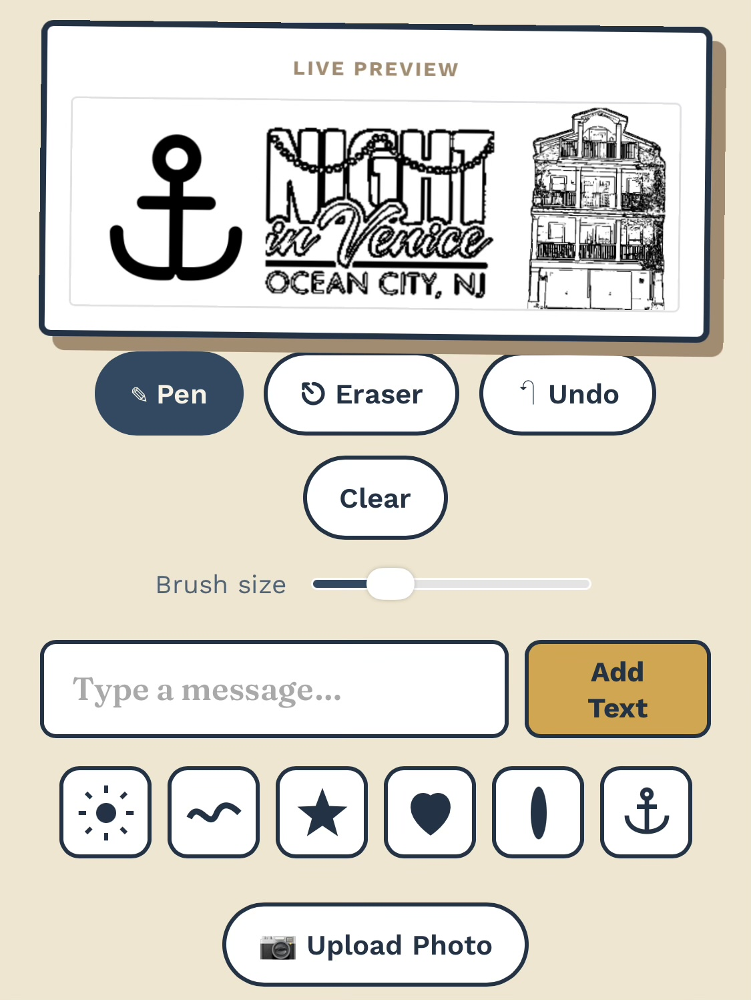

Quick start guide
Setup, usage, and troubleshooting for your Wave Clock.
Getting started
Just plug in the USB-C cable — it starts connecting right away.
On your phone, join the network called "WaveClock-Setup". A setup page will pop up — just pick your home WiFi, enter the password, and your Wave Clock takes it from there.
Scroll to your beach town with the wheel and press the bottom button. You'll only do this once.
That's it — your Wave Clock is ready to go.
Design your own
No app needed.
Watching a photo turn into a hand-drawn sketch right in front of you never gets old. Your display shows whatever you want — from special events to tonight's dinner plans.
Turn on the Custom screen in Settings, then just look at it — you'll see a QR code to scan right there. Already have something published? Press the wheel anytime to bring the QR code back up.

The controls
The six screens
It cycles through these on its own, or flip through them anytime.
Settings
Press it again to flip through the pages, and once more to close.
Troubleshooting
Just a WiFi hiccup — hold the top button for 5 seconds to check its connection.
It checks on its own every night. To check right now: hold the top button 5 seconds, then press the wheel.
Holding the top button for 5 seconds also shows technical details (firmware version, WiFi signal, device ID) — handy to have on hand if you ever need to reach out for support.
Unplug it, hold the bottom button, and plug it back in while still holding it. This only forgets your WiFi — everything else stays put. Then set up WiFi again like the first time.